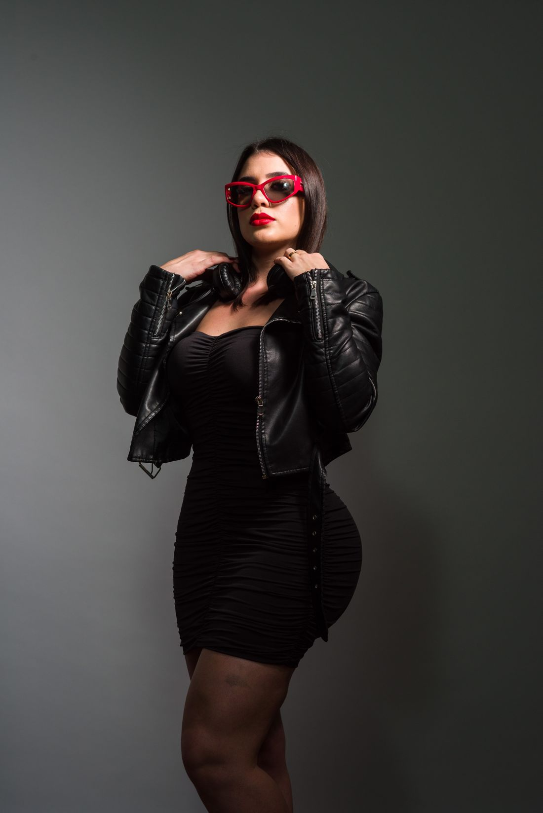

DJ · Melodic Techno


A música me faz sentir viva.
Melodic Techno · disponível para bookings
Ref. abertura · Offform (talent agency)Grade de 3 fotos de sangria total no lugar de uma única foto com moldura. O menu fica sobreposto direto na imagem, sem barra própria. A linha com "2026" e as categorias (clicáveis, levam às seções) substitui o texto de status solto. Canto inferior direito ganhou uma lista numerada, como a "01 WOMEN / 02 MEN" da referência.
Sobre — Bárbara Thomaz
DJ independente,
com identidade
própria no
Melodic Techno.
Sou Bárbara Thomaz, e a música me faz sentir viva. Encontrei no Melodic Techno uma forma de unir energia, intensidade e emoção, e de compartilhar essa conexão com quem está na pista.
Cada set é uma jornada para viver o presente, dançar com liberdade e se deixar levar pelo som. É essa experiência que quero dividir: música que aproxima, desperta sensações e cria momentos que ficam.
01Sets ao vivo
02Produções & remixes
03Bookings
Ref. sobreTrês colunas iguais à seção "ABOUT" da referência: uma frase curta de abertura, o corpo do texto no meio, uma lista numerada do que ela oferece à direita. A foto de IMG_7346 saiu daqui por enquanto (estava solta, quebrando a sequência) — fica pendente decidir onde ela entra. Texto do briefing, ainda para aprovação da Bárbara.
Música — sets e lançamentos

01Spotify Bárbara ThomazPerfil de artistaOuvir 02SoundCloud Who Is BárbaraPlaylistOuvir 03YouTube Canal Bárbara ThomazSets e vídeosAssistir

Ref. músicaSubiu para logo depois de "Sobre", no lugar onde estava o "Set em destaque" (a pedido do Guto). Cada item é um quadro com foto de estúdio no fundo, no mesmo estilo da galeria — no lugar da lista de texto ou de widgets incorporados (o site atual carrega o player do Spotify, um vídeo do YouTube e o widget do SoundCloud lado a lado, cada um com a cara da própria plataforma). Nenhum player de terceiro carrega aqui — o clique abre a plataforma. "Who Is Bárbara" segue como playlist até confirmarmos o que é.
Set em destaque
 Assistir no YouTube
B2B Lerock's × Bárbara ThomazYouTube
Assistir no YouTube
B2B Lerock's × Bárbara ThomazYouTube
- Local
- New York Pub
- Data
- a confirmar
- Formato
- B2B
Um registro ao vivo da pista. O link abre direto no YouTube — nada carrega junto com a página.
Ref. setDepois da troca de ordem, esta seção passou a vir logo após "Música" — o player continua de ponta a ponta (sem a margem lateral), pra não voltar a flutuar como um cartão solto. Mesma lógica da capa de editorial da referência: imagem grande à esquerda com legenda sobreposta, coluna de dados à direita. A foto é provisória — trocar pelo frame real do vídeo assim que tivermos. Se um set solo for aprovado, ele assume este lugar.
Em cena — galeria


Ref. galeriaGrade de colunas desiguais, de ponta a ponta, com número e legenda sobre cada foto — igual à seção "FEATURED TALENTS" da referência. Clique amplia (setas do teclado navegam, Esc fecha). Quando houver fotos de apresentações reais, entram alternadas com os retratos de estúdio.
Bookings e press kit
Leve essa experiência para o seu evento.
Para bookings e informações sobre apresentações, entre em contato.
- (19) 98900-5660
- E-mail profissional
- a confirmar
- Responsável
- a confirmar
Ref. bookingsMesma grade de 3 colunas da seção "Sobre", agora para contato: a chamada, os dados e as redes lado a lado — no lugar de empilhar tudo numa faixa só. O WhatsApp vem do site atual (lá o link está sem o 55; aqui já corrigido).